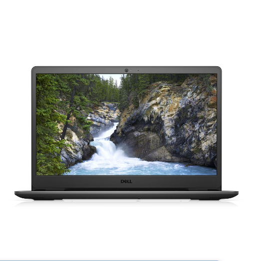
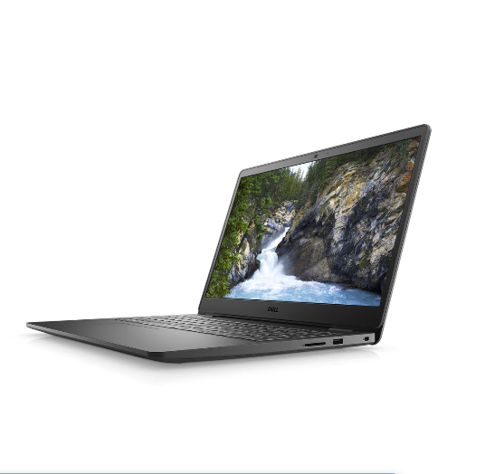
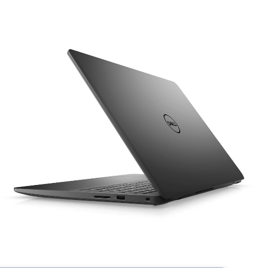

Specifications - Display: 15.6-inch - Processor: Celeron 4205U - Memory: 4GB - Storage: 500GB - Graphics: UHD GFX - Operating System: WIN10SL Overview The Dell Inspiron 15-3000 Series 3583 has a resolution of 1366 x 768 pixels that will let you enjoy watching crystal clear images. You can also video chat with friends and family with the integrated 720HD 1.0MP camera with compatible microphones. It has a display screen size of 39.62 cm with an HD bright view display and an LED backlight with Truelife that will ensure picture clarity.